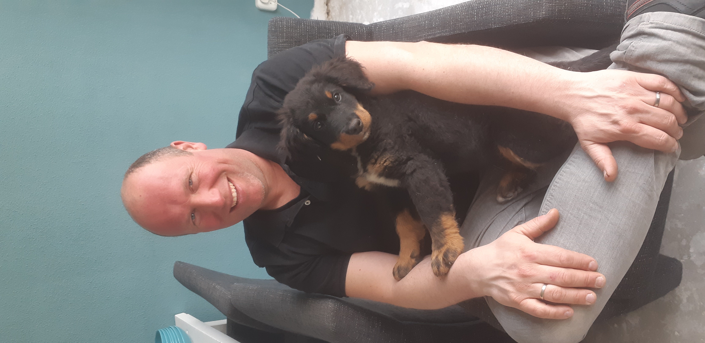

Hallo Ik Ben Christiaan Bol ben 41 Jaar oud. Ben getrouwd met mijn vrouw Danielle.
Samen Wonen we met drie kinderen Ryan Fay En Yuul en onze hond Max samen in ons Huis die we zelf hebben opgeknapt.
We Wonen in sassenheim
We gaan graag op Vakantie met ze alle de afgelopen jaren zijn we wezen kamperen in onze caravan.
Voordat we hier kwamen wonen hadden we een speedboot en gingen we vaak varen in de avond of in het weeekend.
